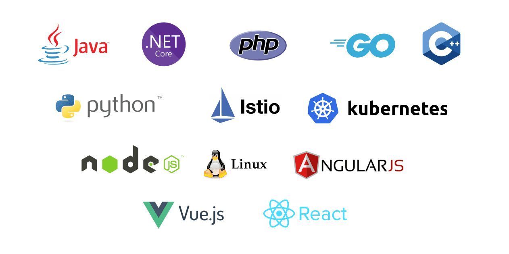

All-in-one APM solution
-
Tracing, metrics and logging
SkyWalking is built for consistent observability. Monitor everything happening to your application in browser.
-
Agents for your stack
Java, .Net Core, PHP, NodeJS, Golang, LUA, Rust, and C++ agents with active development and maintainance. eBPF profiler for C, C++, Golang, and Rust as additional.
-
Service Mesh and FaaS ready
Service mesh and FaaS observability built-in. Collect and analyze data from Istio + Envoy Service Mesh and OpenFunction as FaaS platform.

Everything your team expects from an APM for distributed system
-
Light weight and modular
No big data stack. Adopt to different scale by configuring which modules to include.
 zookeeper
zookeeper etcd
etcd kubernetes
kubernetes -
Alarms support
Built-in webhooks support for automatically sending out event notifications via HTTP, gRPC, Slack, and more.
 rules
rules -
Visualization that speaks
Built-in data visualization that gets your team started. Your can further customize it or integrate your own.

-
Pluggable storage
SkyWalking supports a wide range of backend storage solutions, and they are pluggable.
 h2
h2 ElasticSearch
ElasticSearch MySQL
MySQL PostgreSQL
PostgreSQL -
Performance
SkyWalking agents provide little extra load for target services.
 4k requests/s
4k requests/s 5k requests/s
5k requests/s -

All Stacks Monitoring
SkyWalking provides native agents and works with global observability tools to support all stacks monitoring.
The vibrant community that makes all happen
-
Thousands of contributions every year
In the past years, SkyWalking accepts thousands of contributions from hundreds of people globally, and continuous.
-
600 contributors milestone
SkyWalking has over 600 contributors based on GitHub repository statistics. This is a remarkable achievement for the whole diverse community.
Ready to get started?
Run SkyWalking in a snap
Try this demo music application to showcase features of Apache SkyWalking in action.
All releasesStay tuned with SkyWalking
-
Questions/bugs?
Features requests, questions or report bugs? Feel free to open a discussion or file an issue.

-
Join our slack workspace!
Send "Request to join SkyWalking slack" mail to dev@skywalking.apache.org. We will invite you in.

-
Follow us on Twitter
For announcement of latest features etc, stay tuned with @ASFSkyWalking.

-
Release Apache SkyWalking Eyes 0.4.0
SkyWalking Eyes 0.4.0 is released. Go to downloads page to find release …